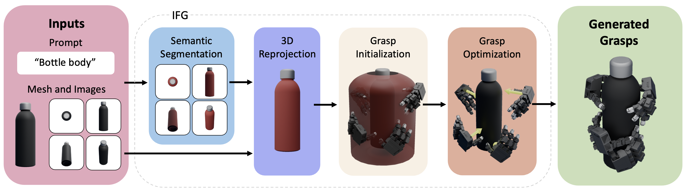
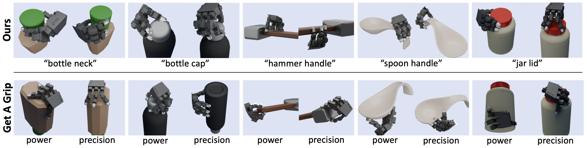
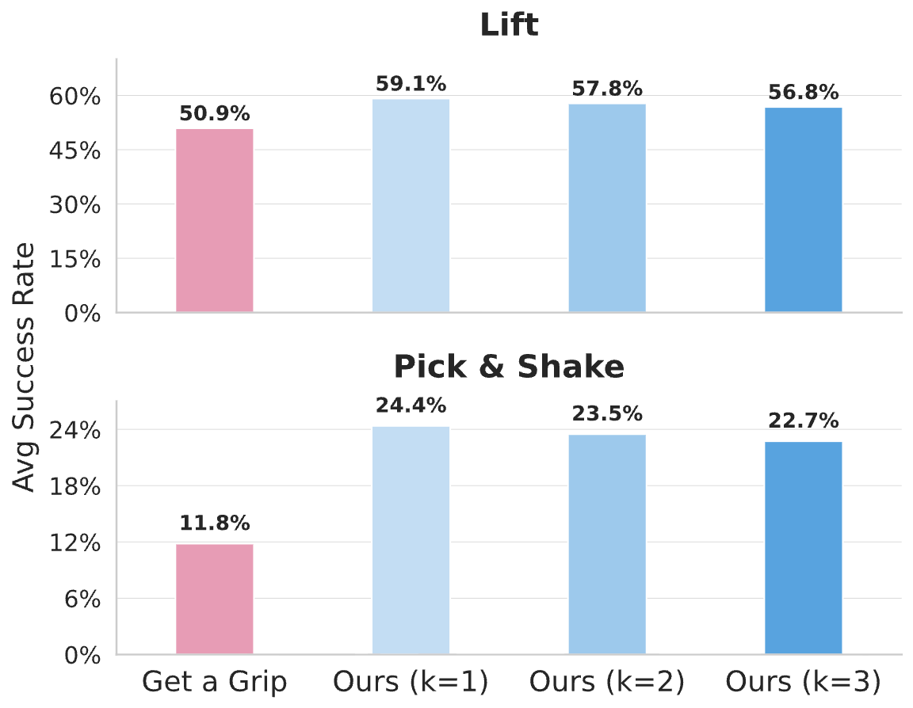
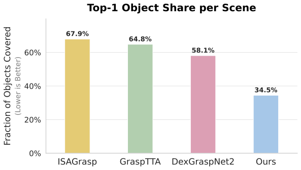
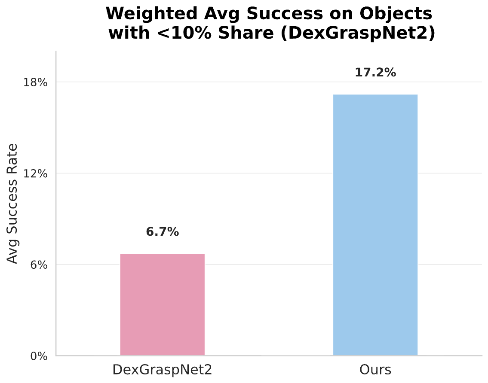

IFG: Internet-Scale Functional Grasping
Abstract
Large Vision Models trained on internet-scale data have demonstrated strong capabilities in segmenting and semantically understanding object parts, even in cluttered scenes. However, while these models can direct a robot toward the general region of an object, they lack the geometric understanding required to precisely control dexterous robotic hands for 3D grasping. To overcome this, our key insight is to leverage simulation with a force-closure grasping generation pipeline that understands local geometries of the hand and object in the scene. Because this pipeline is slow and requires ground-truth observations, the generated dataset is distilled into a diffusion model that can operate on camera point clouds. By combining the global semantic understanding of internet-scale models with the geometric precision of a simulation-based locally-aware force-closure, IFG achieves high-performance semantic grasping without any manually collected training data.
Grasps
Single Object Grasp Examples
Crowded Scene Grasp Examples
Method
Overview

Pipeline
1) Inputs & Useful Region Proposal
IFG renders multi-view images and applies VLM-guided segmentation (SAM + VLPart) to extract task-relevant parts. These are reprojected to 3D and aggregated per mesh face to identify a “useful region” that localizes functional geometry.
2) Geometric Grasp Synthesis
Candidate hand poses are sampled near the useful region. A force-closure-based energy with joint limits and collision penalties is minimized to produce physically valid and functional grasps.
3) Simulation Evaluation
Each grasp is perturbed and tested in Isaac Gym on tasks such as Lift and Pick&Shake. Success rates across perturbations become continuous labels, and unstable grasps are filtered out.
4) Diffusion Policy Distillation
A diffusion model is trained to map a noisy grasp and depth-based BPS input to a final grasp. This combines semantic priors from VLMs and geometric accuracy from optimization for fast inference.
Results
Phase 1: Synthetic Data Generation (Optimization)
This section evaluates our simulation-based pipeline's ability to generate high-quality "ground truth" labels. This "Teacher" data is what we use to train our final model.
1.1 Functional Alignment

1.2 Single-Object Generation Metrics
| Object | Get a Grip | IFG (Ours) |
|---|---|---|
| Water Bottle | 49.1 | 62.8 |
| Large Detergent | 51.2 | 62.5 |
| Spray Bottle | 43.1 | 54.5 |
| Pan | 48.1 | 52.1 |
| Small Lamp | 56.8 | 85.7 |
| Spoon | 42.7 | 50.9 |
| Vase | 32.2 | 55.9 |
| Hammer | 45.8 | 45.8 |
| Shark Plushy | 19.8 | 25.1 |
| Overall Average | 50.93 | 51.11 |

1.3 Optimization Pipeline Ablation
| Configuration | Single (Lift) | Cluttered (Lift) |
|---|---|---|
| Single camera only | 47.83 | 18.53 |
| + Multi-camera views | 48.37 | 24.70 |
| + Two-means clustering | 49.04 | 31.59 |
| Full IFG Pipeline | 51.11 | 32.23 |
Phase 2: Trained Diffusion Model (Inference)
This section evaluates the diffusion model distilled from grasps generated from the synthetic pipeline. Unlike the optimizer, this model runs in real-time and only sees raw point cloud data from a single depth camera.
2.1 Full Crowded Scene Performance
| Object Category | DexGraspNet2 | GraspTTA | ISAGrasp | IFG (Ours) |
|---|---|---|---|---|
| Tomato Soup Can | 47.8 | 38.3 | 52.0 | 45.5 |
| Mug | 33.2 | 26.9 | 22.6 | 60.4 |
| Drill | 32.1 | 20.8 | 36.4 | 57.5 |
| Scissors | 9.7 | 0.0 | 33.7 | 20.2 |
| Screw Driver | 0.0 | 8.3 | 40.0 | 22.0 |
| Shampoo Bottle | 50.6 | 25.4 | 18.8 | 53.1 |
| Elephant Figure | 23.6 | 29.6 | 24.2 | 35.8 |
| Peach Can | 61.8 | 28.0 | 55.3 | 60.3 |
| Face Cream Tube | 32.1 | 22.5 | 20.7 | 35.5 |
| Tape Roll | 22.7 | 13.9 | 9.8 | 43.2 |
| Camel Toy | 12.8 | 14.3 | 21.3 | 21.8 |
| Body Wash | 40.2 | 22.3 | 29.4 | 58.3 |
| Object Average (Hard) | 30.55 | 20.86 | 30.35 | 42.80 |
| Scene Average (Overall) | 36.71 | 25.64 | 32.51 | 34.16 |
2.2 Generalization and Coverage Analysis


Discussion: The "Balanced Coverage" Advantage
While overall "Scene Averages" can be skewed by models that only pick the easiest objects in a pile, our Object Average (42.80% vs 30.55%) proves that IFG learns to handle a wider variety of geometries. By seeding the model with VLM semantic knowledge, we prevent the "student" from overfitting to simple shapes and encourage a deeper understanding of functional grasping.